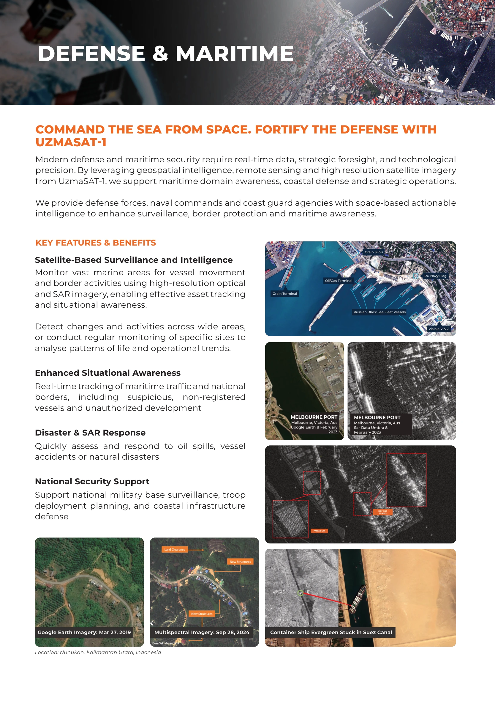
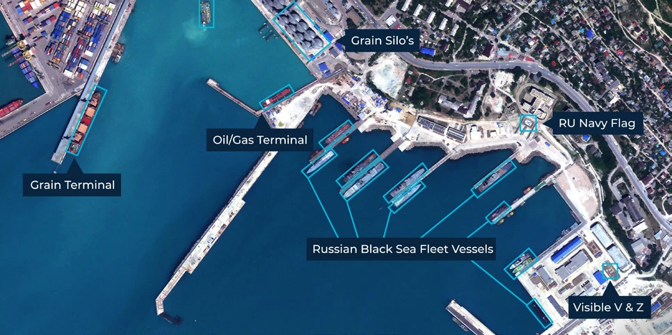
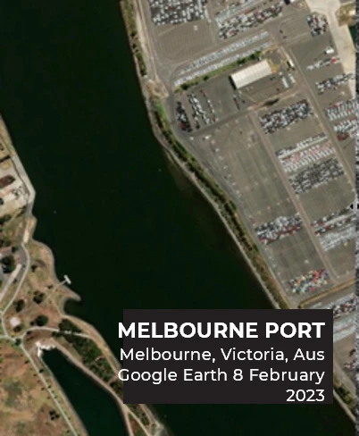
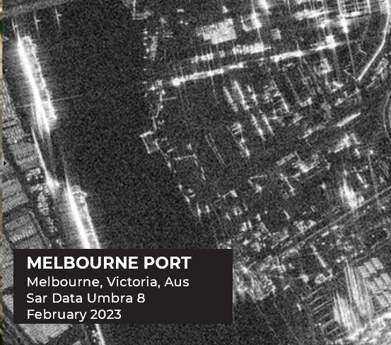
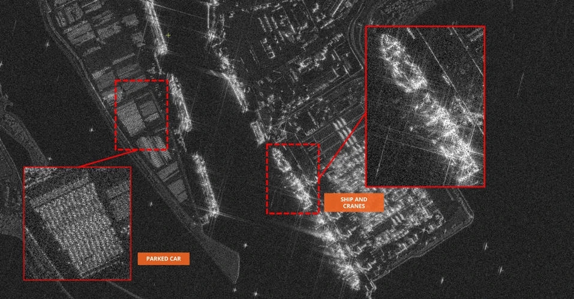
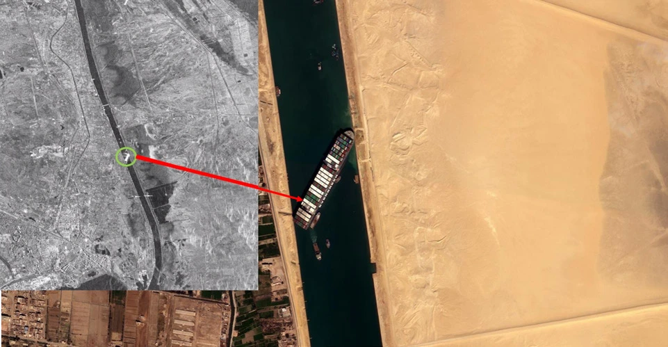
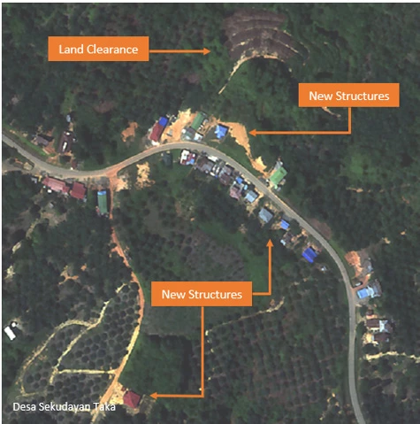
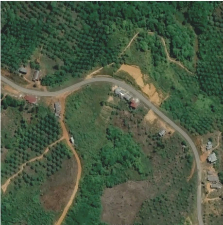
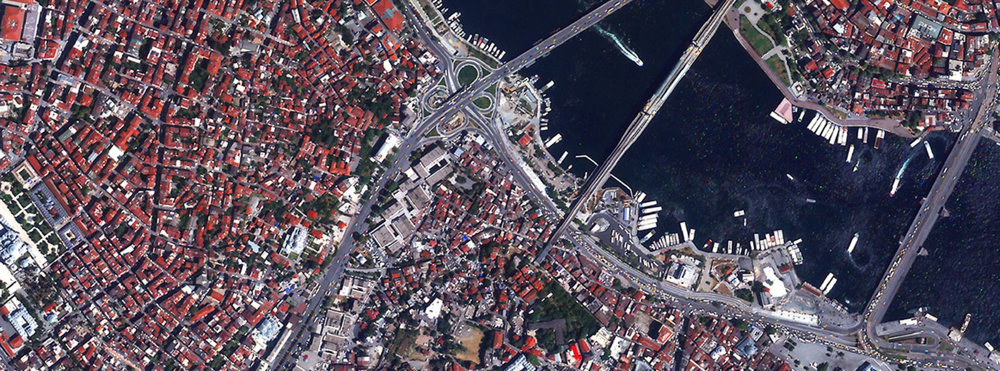

Command the sea from space. Fortify the defense with UZMASAT-1.

Defense & maritime
Geospatial intelligence, remote sensing and high-resolution imagery support maritime domain awareness, coastal defense and strategic operations. The service provides defense forces, naval commands and coast guard agencies with space-based intelligence for surveillance, border protection and maritime awareness.
Key features & benefits
- Satellite-based surveillance and intelligence: optical and SAR imagery for vessel movement, border activities, asset tracking and situational awareness. Monitor changes, activities and patterns across broad areas or specific sites.
- Enhanced situational awareness: maritime traffic and national-border monitoring, including non-registered vessels and unauthorised development.
- Disaster & SAR response: assessment and response for oil spills, vessel accidents and natural disasters.
- National security support: military-base surveillance, deployment planning and coastal infrastructure defense.
Imagery examples
- Nunukan, Kalimantan Utara, Indonesia: Google Earth imagery dated March 27, 2019, compared with multispectral imagery dated September 28, 2024.
- Container ship Evergreen stuck in the Suez Canal.
- Port, vessel and coastal monitoring examples, including Melbourne Port.
In pictures
{kind=link}

{kind=link}
{kind=link}

{kind=link}
{kind=link}

{kind=link}
{kind=link}

{kind=link}
{kind=link}

{kind=link}
{kind=link}

{kind=link}
{kind=link}

{kind=link}

{kind=link}
{kind=link}

{kind=link}
Read the complete source transcript
COMMAND THE SEA FROM SPACE. FORTIFY THE DEFENSE WITH UZMASAT-1
Modern defense and maritime security require real-time data, strategic foresight, and technological precision. By leveraging geospatial intelligence, remote sensing and high resolution satellite imagery from UzmaSAT-1, we support maritime domain awareness, coastal defense and strategic operations.
We provide defense forces, naval commands and coast guard agencies with space-based actionable intelligence to enhance surveillance, border protection and maritime awareness.
KEY FEATURES & BENEFITS
Satellite-Based Surveillance and Intelligence
Monitor vast marine areas for vessel movement and border activities using high-resolution optical and SAR imagery, enabling effective asset tracking and situational awareness.
Detect changes and activities across wide areas, or conduct regular monitoring of specific sites to analyse patterns of life and operational trends.
Enhanced Situational Awareness
Real-time tracking of maritime traffic and national borders, including suspicious, non-registered vessels and unauthorized development
Disaster & SAR Response
Quickly assess and respond to oil spills, vessel accidents or natural disasters
National Security Support
Support national military base surveillance, troop deployment planning, and coastal infrastructure defense
DEFENSE & MARITIME
Google Earth Imagery: Mar 27, 2019
Location: Nunukan, Kalimantan Utara, Indonesia
Multispectral Imagery: Sep 28, 2024 Container Ship Evergreen Stuck in Suez Canal